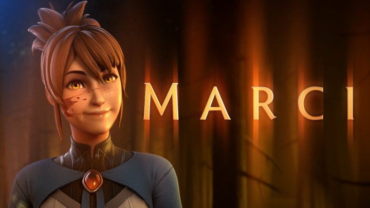

Tracing Team Spirit’s road from Russia to the Aegis
of Champions
Despite all the odds, Team Spirit are the
Champions of Dota 2 after winning The
International 10.
It's official – Team Spirit are the Dota 2 World
Champions. The Russian squad lifted the Aegis of
Champions at The International 10 after
defeating PSG.LGD 3-2. But just how did this
Cinderella story come to fruition?
It seems hard to believe now that Team Spirit
nearly didn't even make it to The International
10 after failing to secure enough Dota Pro
Circuit points during the regular season. The
team then found themselves down 2-1 in the
finals of the open qualifiers, just one game
away from never making it. Now they’re the
champions.
Dota 2 announces season 2 of Dragon’s Blood for
Netflix, Marci to become new hero
As expected Dota 2 has dropped a new bombshell
of an announcement, with the second season of
Dragon’s Blood and the introduction of Marci as
a hero.

First and foremost Dota 2 went on to announce
the second season of their animated series
Dragon’s Blood with a brand new trailer. The
series was quite a big success for both Valve
and Dota 2, with it receiving quite favorable
reviews and introducing a whole bunch of new
people to the game of Dota. Now we’ll be getting
that much needed second season, which is set to
drop in January.
Prior to the announcement, the Dota 2 community
was already full of speculation on the next hero
that’d be announced to make the game. Now we’ve
got confirmation that we’ll get some more
overlap between the animated series Dragon’s
Blood and the game itself, as popular character
Marci will be introduced as a hero. She’ll be
joining the game in fall.
While we now know Marci is joining, we don’t
really have a lot of information about her
strengths or abilities. In the trailer (and in
the show) she’s been shown to have tremendous
physical strength and seems to excel in physical
combat, which is most likely the way she’ll
battle in the game as well.